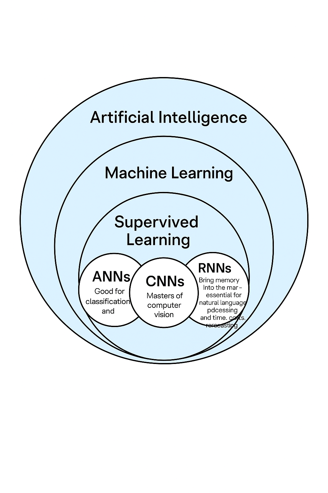

INTRODUCTION: Welcome back to the Neural Circus!
Artificial Intelligence includes Machine Learning, which includes Deep Learning, which includes Supervised Learning, which includes ANN, CNN, and RNN (among others). Fun, right? Like Russian dolls — but with more matrix multiplications, and painful-to-imagine dimensions.Here's the cheat diagram:
Welcome to Part 3 of the “Watch Me Learn AI” series. This time, we’re diving into the world of supervised deep learning — the flavor of deep learning where models learn from labeled data. If you’re wondering why this post doesn’t include unsupervised learning… blame the Boltzmann distribution. It lured me into a rabbit hole of least energy principles, entropy, and time symmetry. I’m still trying to figure out why we can’t remember the future. (Until I remember I probably don’t have the raw talent to answer that — and then it’s back to unsupervised deep learning.)
If you followed along with my blog on building a digit recognizer from scratch, congrats — you’ve already touched on a supervised deep-learning algorithm. That post laid down some of the basics (some of which I only fully grasped two weeks and three existential crises later(I mean what is time?)). If you're curious about what I struggled with, here’s a link to the chat — enjoy the digital documentation of my absolute confusion.
So, what is deep learning really? In short: it’s all about neural networks, which are loosely inspired by the biological brain. These networks learn by adjusting weights and biases across layers of interconnected "neurons." The magic happens thanks to activation functions, which add non-linearity so the network can model complex relationships. Common ones include:
- ReLU – used in hidden layers, fast and reliable.
- Sigmoid – often used for binary classification.
- Softmax – the one I forgot mid-writing, but perfect for multi-class classification. Thanks, ChatGPT.
In this post, I’ll walk you through three projects that explore each of these architectures — two improved from ML, one including cats, and one ugly mess. Let’s get into it.
Section 1: ANN – We (don't) ride at dawn.
In the previous projects, we threw our hats into the ring for two Kaggle competitions (Titanic and House predictions). We developed simple machine learning models... and lost. Painfully. Yes, “we.” I’m dragging you down with me.
But in the spirit of growth (and to redeem our honor), I — your fearless hero — returned to those same problems armed with Artificial Neural Networks (ANNs). A bit more compute. A bit more caffeine. A lot more trial and error.
The idea was simple: take the existing ML pipelines and replace them with neural networks. I experimented with different layer depths, activation functions, and neuron counts, tweaking hyperparameters like a digital alchemist. I used the Adam optimizer, which is like gradient descent but on steroids — faster convergence.
Somewhere along the way, though, I may have… overfitted. Hard. The model started performing spectacularly on training data and flopping on validation. A tale as old as time (or at least as old as scikit-learn).
Still, even with its imperfections, the ANN approach was a major step up in learning and performance. Plus, it forced me to start thinking in tensors, which is like learning a new language — except the verbs are dot products.
I also tried an ensemble (Majority voting), still didn't help, so maybe let's not compete yet. Yeah?
Titanic with ANN
Predict Titanic survival outcomes using Artificial Neural Networks (ANNs).
View ProjectHouse Prediction with ANN
Apply ANNs to predict house prices with enhanced accuracy.
View ProjectSection 2: CNN – is it a CAT?
At the end of the MNIST digit recognizer section, we implemented an ANN that outperformed my lovingly hand-built one. The difference? Most likely the optimizer — turns out gradient descent with momentum (thanks, Adam) is a bit more efficient.
So, for the next challenge, I decided to up the ante — and the dimensions. Instead of grayscale numbers, I took on the classic Cats vs. Dogs image classification problem. Naturally, this resulted in me downloading over a thousand cat photos onto my gallery. For science (I also want a cat now).
To tackle this, I used a Convolutional Neural Network (CNN) — a deep learning architecture purpose-built for image data. Unlike ANNs, which treat every pixel independently, CNNs exploit the spatial relationships between pixels. Here's a quick breakdown:
- Convolution: The model applies small filters (think 3x3 or 5x5 matrices) over the input image, scanning for specific features like edges, curves, or textures.
- Activation (ReLU): Introduces non-linearity after each filter operation. Without it, we’d just be doing fancy linear algebra (see the chat).
- Pooling: Reduces the spatial dimensions of the feature maps, keeping only the most important information. Like a TL;DR for images — fewer pixels, same story.
- Flattening: Transforms the pooled features into a 1D array.
- Fully Connected Layers: This array is fed into a standard neural network to perform the final classification — cat or dog. Pointy ears vs. floppy ears. Judgment day.
Training took a bit longer (images are chunky), but the results were solid — kinda. I mean some dogs are really small.
Is it a Cat?
Classify images as cats or dogs using Convolutional Neural Networks (CNNs).
View ProjectSection 3: RNN – The model that cried NO!
Okay. I need to type slowly on this one. Recurrent Neural Networks — or as I called them for an embarrassingly long time, Recurring Neural Networks — are a different breed.
Unlike the feedforward networks we used before, RNNs have a feedback loop. (Yes, that Control Systems 101 memory just kicked in.) This loop gives them a sense of time — they don’t just take in input, process it, and move on; they remember previous inputs. Which is incredibly useful for sequential data like:
- Time series (think stock prices, weather data)
- Natural Language (finishing a sentence usually depends on how it started)
- Or… making an entire amovie script. (Popcorn?)
Predict Stock Prices
Use Recurrent Neural Networks (RNNs) to predict stock prices based on sequential data.
View ProjectConclusion – Brain Hurts, But Fun
AI? Fun.
Machine Learning? Also fun.
Deep Learning Theory? Brain go ouch.
Supervised Deep Learning Implementation? Complex… but okay.
Next up: Unsupervised Learning — and let me tell you, it’s already giving me “why is entropy everywhere” vibes and keeping me up at night. (Except KNN and SVMs. Those are the homies. Respect.)
But hey — if it were easy, we wouldn’t be here.
Overall verdict: Still fun. Still fighting. Still learning.